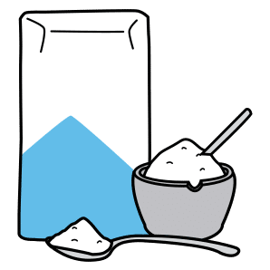
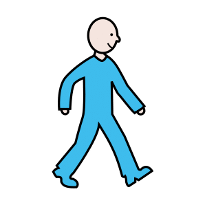

Thématique A · CAP
Fiche de révision A3 — L’activité physique
Révise en t'amusant, écoute, puis imprime ta fiche
Fais défiler la page : les notions apparaissent une à une. Touche les cartes pour les retourner, touche 🔊 Écouter pour entendre une carte, une question ou une correction, puis réponds aux questions « Je vérifie mes acquis ».
1. La commande du mouvement
Le chemin du message nerveux : touche chaque carte.
Le système nerveux : le cerveau, la moelle épinière et les nerfs, qui commandent les muscles.
2. Le système cardiorespiratoire
 Le cœurIl fait circuler le sang. Rythme cardiaque : nombre de battements du cœur par minute.
Le cœurIl fait circuler le sang. Rythme cardiaque : nombre de battements du cœur par minute. Les poumonsIls assurent la respiration. Rythme respiratoire : nombre de respirations par minute.
Les poumonsIls assurent la respiration. Rythme respiratoire : nombre de respirations par minute.Le sangIl transporte jusqu'au muscle le glucose et le dioxygène.
Le système cardiorespiratoire (le cœur, les poumons, le sang) apporte au muscle ce dont il a besoin.
3. Le corps à l'effort
Les mesures de Florian : au repos, après 10 minutes de match, après 5 minutes de repos.
Rythme cardiaque65 → 150 → 90 battements par minute.
Rythme respiratoire14 → 32 → 18 respirations par minute.
Température36,8 °C → 37,9 °C → 37,2 °C. Proche de 37 °C, elle monte un peu à l'effort.
À l'effort, le rythme cardiaque et le rythme respiratoire augmentent et la température monte un peu. Après l'effort, ils reviennent peu à peu à leur valeur de repos.
4. Ce que le muscle consomme et rejette

Il consommeLe glucose (un sucre apporté par l'alimentation) et le dioxygène (apporté par la respiration). Le sang les transporte : le muscle en tire son énergie.Il rejetteDes déchets : le dioxyde de carbone, que le sang emporte vers les poumons, et de la chaleur.
5. La sueur
 La sueurLiquide produit par la peau pour évacuer la chaleur produite par les muscles. En s'évaporant, la sueur refroidit le corps.
La sueurLiquide produit par la peau pour évacuer la chaleur produite par les muscles. En s'évaporant, la sueur refroidit le corps.6. Activité physique et sédentarité

L'activité physiqueTout mouvement produit par les muscles qui demande une dépense d'énergie : au travail, dans les déplacements, à la maison, pendant les loisirs. La sédentaritéLe temps passé assis ou allongé, hors sommeil et repas, avec très peu de mouvements.
La sédentaritéLe temps passé assis ou allongé, hors sommeil et repas, avec très peu de mouvements.7. La recommandation du PNNS
Calcul : 30 minutes × 5 jours = 150 minutes au moins par semaine. L'heure de football de Florian (60 minutes) ne suffit pas. D'après le cours A3 (Doc. 3).
8. La santé et les trois bien-êtres
Pour l'OMS (Organisation mondiale de la santé), la santé est un état de complet bien-être physique, mental et social. Touche chaque carte.
Je vérifie mes acquis : 0 / 0